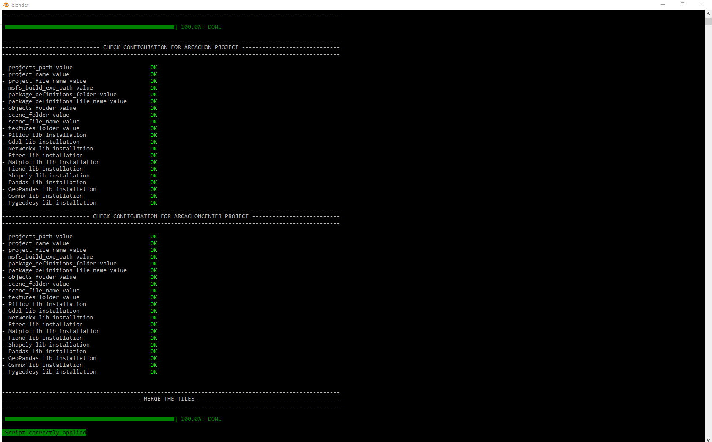

Merge an existing MSFS scenery project into another one¶
Imagine you want to extend a scenery. You downloaded another area of the city you want to include into MSFS, and you would like to add this new area into your main scenery project.
For the new area, just initialize a new project (see Initialize a new MSFS scenery project for further details), then optimize this new scenery (see Optimize an existing MSFS scenery project for further details).
When the new scenery has been optimized, you can merge it into the main scenery.
To do so, in Blender, select Google Earth Decoder Optimization Tools > (Optional) Merge an existing [MSFS][2] scenery into another in the top menu.
Merge sceneries limitations
The merge sceneries process only integrates tiles, colliders, or 3d objects from one scenery to another one. It does not copy the polygons, the exclusion rectangles, the landmarks, or the height map data.
That's why i strongly suggest you to use this process after having optimized all the sceneries you want to merge, and before any other operations, such as the creation of the terraforming polygons, the cleaning of the 3d data, or the generation of the height map data (DEM data).
Another interesting scenario where you can use the merge process, is when you want to add more details in a specific area of an existing scenery.
Imagine that your main scenery covers a city, with 17-19 lod range for the tiles. There is an historic center in the city, and you would like this center to have more details, with 17-20 lod range for the tiles.
Just initialize a new project (see Initialize a new MSFS scenery project for further details), download the tiles with 17-20 lod range, then optimize this new scenery (see Optimize an existing MSFS scenery project for further details).
Now, you have a new scenery that covers the historic center of your city, and you want those better detailed tiles to be included in your main scenery.
To do so, in Blender, just use the merge sceneries process, by selecting Google Earth Decoder Optimization Tools > (Optional) Merge an existing [MSFS][2] scenery into another in the top menu.
Here is an example of such a process:
Final scenery size
Be careful when using the merge sceneries process, as the "PackageSources" folder should not be bigger than 7.5Gb, otherwize there are risks that the scenery will not build correctly, as it seems to be a compilation limitation for the MSFS fspackagetools.exe.
It is the case in my config (with 32 Gb RAM, and 12 Gb VRAM).
Set up the merging¶
- in the field
Path of the final MSFS scenery project, check that the main scenery folder is displayed - select the path to the folder containing the MSFS scenery project you want to merge into the main one, by clicking on the path to the project definition file you want to merge into the final one... button.
- Once selected, check that the folder of the MSFS scenery to merge is correct in the
Path of the project to merge into the final onefield - Once selected, check that the xml definition file of the MSFS scenery to merge is correct in the
Xml definition file of the project to merge into the final onefield
Run the polygons generation process¶
If all the settings are correctly set, the Merge an existing MSFS scenery project into another one... button should be enabled (except if the MSFS project folder does not exist, has been renamed or removed).
Just click on this button, and a Blender window console will appear on the screen.
Once finished, you should see this on the console:

{kind=link}
By default, the building process is executed by the MSFS fspackagetool exe. At the end of the process, you should see this window:
{kind=link}
Merged tiles z-axis adjustment¶
When the tiles have been merged, and the new resulting scenery is built, when you open this one into the MSFS Dev mode, there are chances that the merged tiles are not exactly aligned in the z-axis with the tiles from the original scenery.
In this case, just open the "Scenery Editor" window, then sort by alphabetical order. You will see objects having the name of the new scenery as a prefix (for instance, new_scenery_21537373607263635).
Select those objects, then adjust the z-axis, using the "Gizmo" window of the MSFS dev mode.
Here is an example of this specific operation: